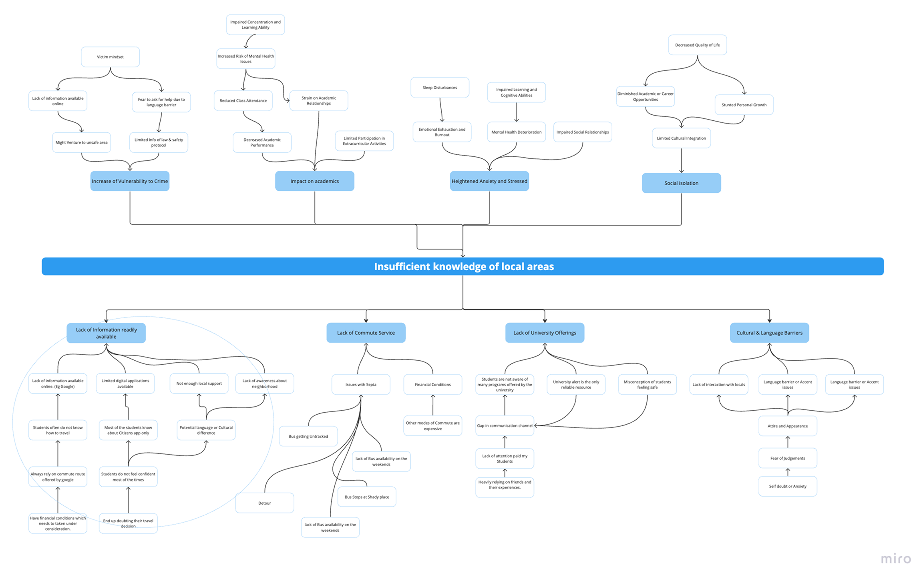
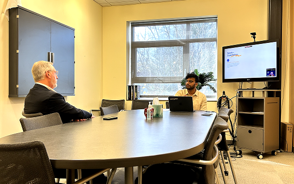
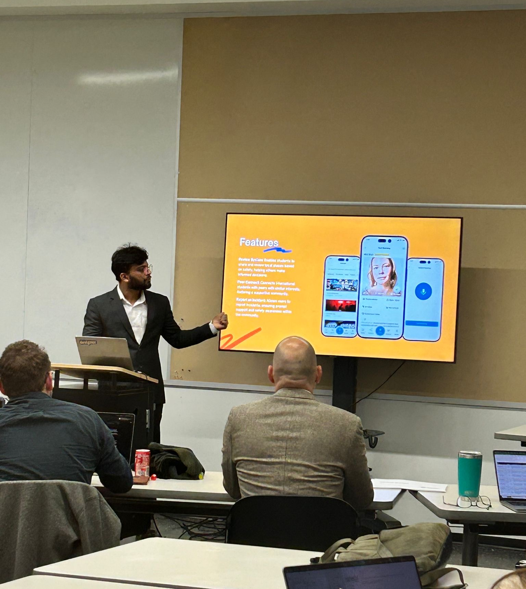

Over a million students.
No one asked them
if they felt safe.
A generative research study into why international students in Philadelphia feel unsafe — even when the tools to help them already exist.
The data revealed a gap
no tool was addressing.
Before speaking to a single participant, I immersed myself in existing research — government datasets, the Clery Act, campus crime reports. The pattern that emerged reframed the problem entirely. This wasn't a technology gap. It was a trust and information gap.
Students had the tools to reach out — but not the social permission to use them. That became the lens for everything that followed.

One interview changed
the entire direction.
"There were a bunch of dudes — middle aged teenagers, if I could put it that way. They kicked me from behind. I fell. They threw a few punches. I still don't know what their intention was. That's the thing that's haunting me till now."
Every research decision after that moment was filtered through one question: What stopped him from getting help? The answer wasn't the lack of a button. It was the lack of someone to call.
Why these methods.
Not just which ones.
I started with three research questions that kept me honest throughout: Why do existing safety tools fail in moments of real risk? What role does social judgment play in asking for help? How do international students build trust in an unfamiliar city?
Each method was chosen because it answered something the others couldn't.


Moving from stories
to shared patterns.
After interviews across three universities, I ran structured debriefs to look for what kept appearing underneath what students said — not just what they said. Using affinity mapping, three root causes emerged that no existing tool was addressing at once.

What the data actually said.
Four findings that reoriented the entire problem space — each one a shift from assumption to evidence.
From insight to direction.
Three HMW statements grounded in specific behavioral findings — not feature wish lists. Each was validated through pretotyping before any design work began.
Both Mechanical Turk experiments — one testing peer reviews, one testing location sharing — confirmed willingness to engage when framed as mutual support rather than surveillance.


From research to
institutional adoption.
Global Bridge was integrated into Thomas Jefferson University's ecosystem — making it one of the few student research projects to move from concept to deployment within the same academic year.

